Big Orange Crayonmusical thingsPG Six and the Kamikaze Hearts Caffe Lena, Saratoga, NY June 23rd, 2002 This was my first time at Caffe Lena and my first time going to a show with Jen and I enjoyed both. The negatives came out a little more dense than the film scanner is capable of handling, so until I figure out another way of getting them into the computer, the Kamikaze Hearts ones (the only ones where I had to put faces on Zone VIII) will look weird. But otherwise, I now remember why I like Tri-X so much (I had to use it this time because it was the only film that I had in my bag). I like how the high speed film that Kodak made in the 50s looks better pushed three stops than their current speedy guy (T-Max p3200) looks at its intended speed. Technology marches on. But enough photo dorking... Pictures: PG Six 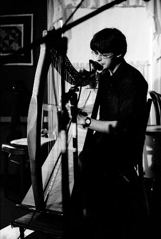 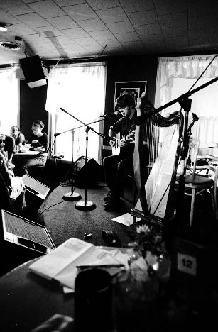 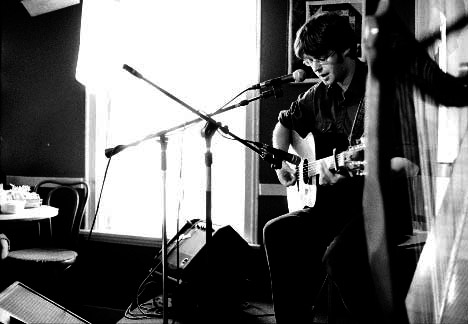 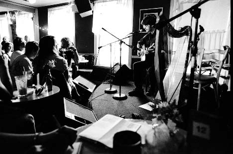 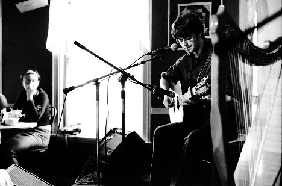 The Kamikaze Hearts 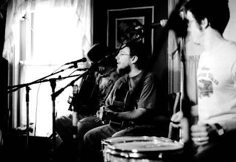 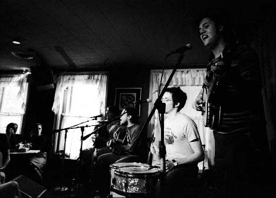 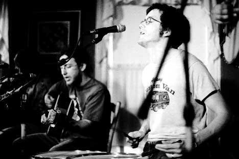 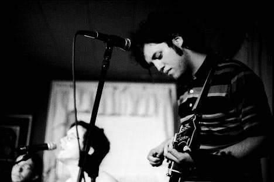 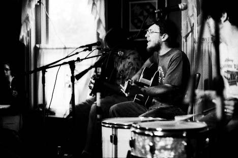 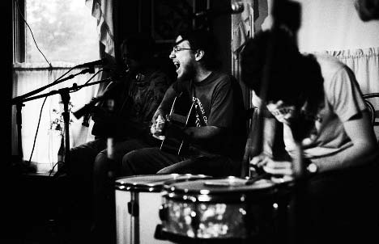 Angry! Here's the bigger one 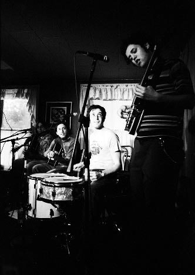 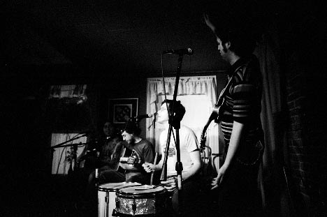 Camera stuff: Body: Nikon FM2n Lenses: 50mm f/1.4 and 24mm f/2.8 Nikkors Film: Kodak Tri-X exposed at ISO 3200, developed in Microphen (1+1) for 20 minutes at 24 degrees, which was probably a minute or so too long. Please don't use these elsewhere unless you are in one of the bands or are a nice person. |
{kind=link}
{kind=link}